Distributed Data Processing Project
Description
This project focused on the basics of distributed data processing to gain an understanding of the concepts and tools involved. The environment was provided by the instructor and was used to practice the concepts. The goal of the project was to build an end-to-end machine learning pipeline. Below, the Pipeline and the steps taken to complete the project are walked through.
Technologies used:
- HDFS
- Hive
- Hbase
- Nifi
- Spark
- YARN
Pipeline Flow
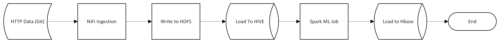
Nifi Flow
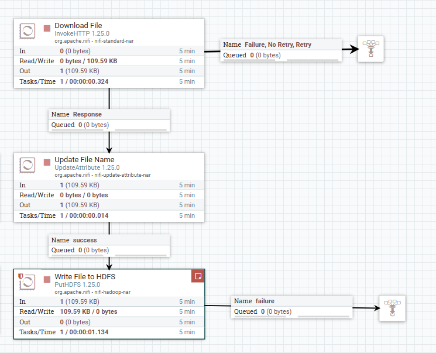
Verify HDFS File
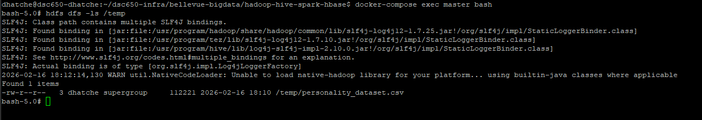
Hive Table
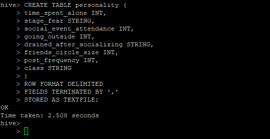
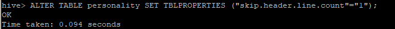
Verify Hive Table
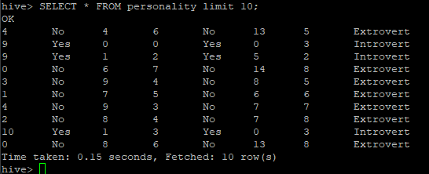
Prepare environment for Spark Job
Install packages on the Main Node
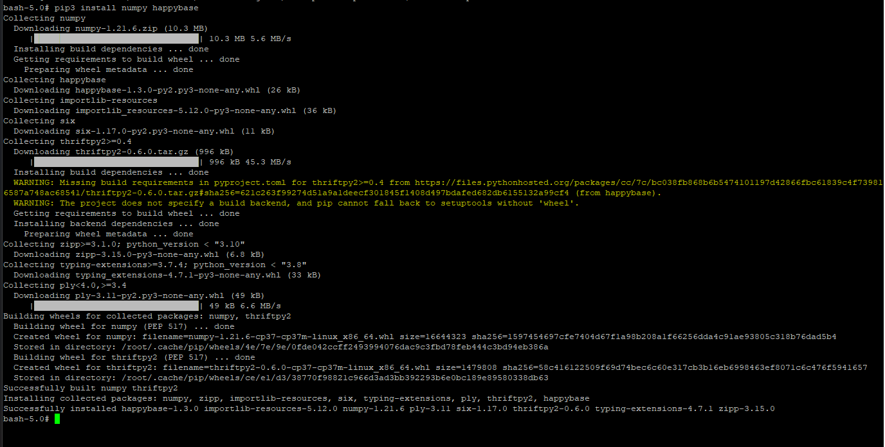
Install packages on Worker1 Node
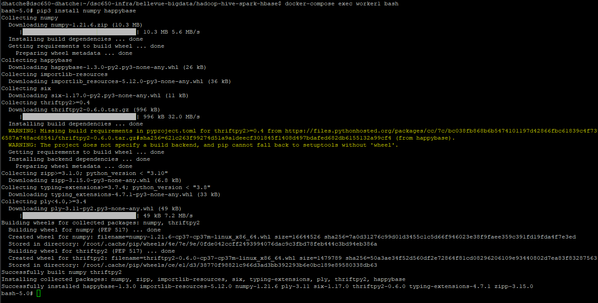
Install packages on Worker2 Node
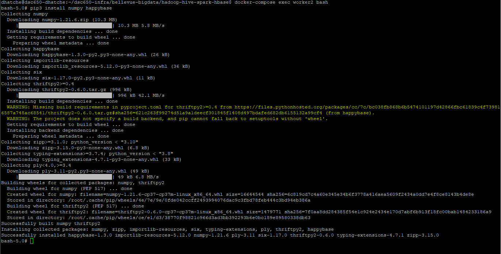
Start the Thrift Server
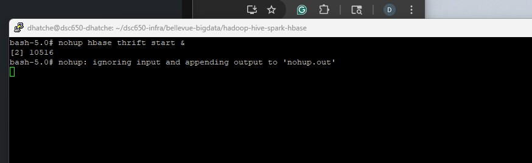
Create Hbase Table
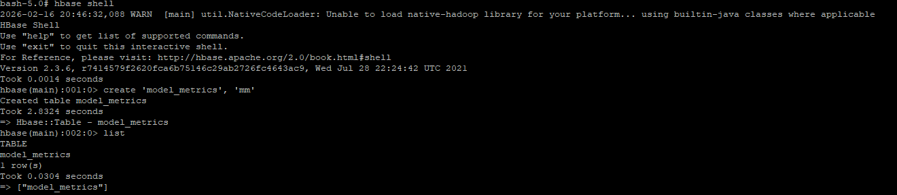
Run Spark Job
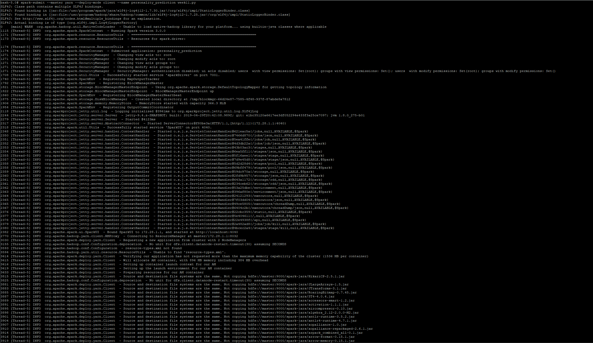
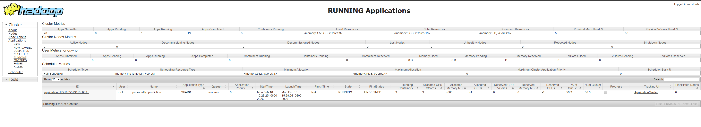
Verify Spark Job
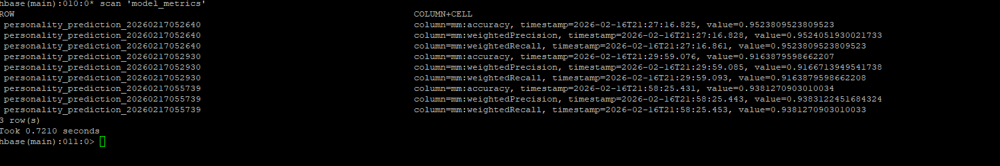